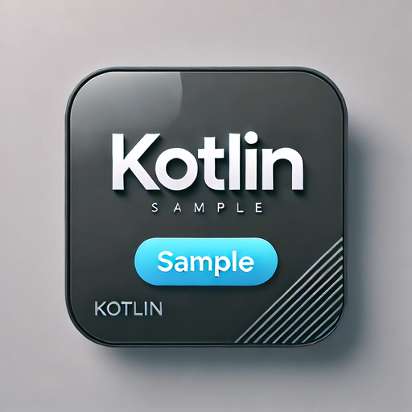
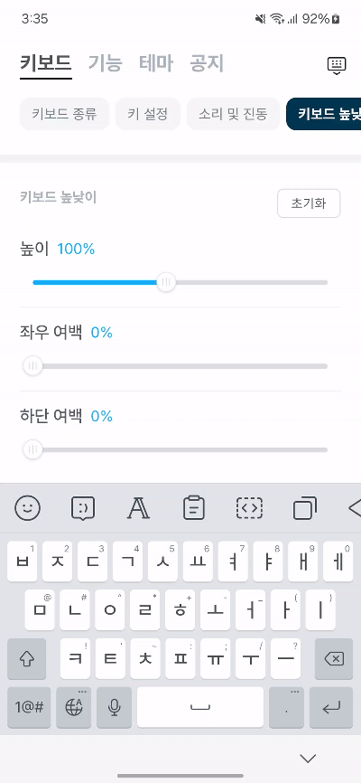
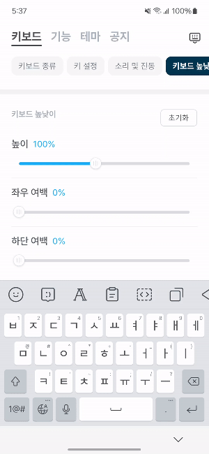

제가 만들고 있는 키보드 앱에서는 키보드 높낮이를 조절하는 기능이 있습니다. datastore에 키보드 높낮이 비율을 flow 값으로 갖고 있고, 이를 collect 하여 높낮이 비율 기준으로 계산하여 UI 높이를 다음과 같이 조절했습니다.

간헐적으로 높이 조절 시 키보드 UI가 깜빡거리는 느낌을 받아 사용자가 높이 조절 시 눈의 피로감과 부자연스러움을 느낄 수 있다는 생각에 이를 개선할 방법을 생각해 봤습니다.
원인을 파악해본 결과 높낮이 조절바를 연속적으로 조절할 때 바뀌는 모든 비율을 UI에 적용하고 있어, 빠르게 UI가 변화하는 사이에 간헐적인 깜빡임이 있었습니다.
이러한 원인을 바탕으로 변화하는 비율의 값을 모두 받지 않고, 짧게 텀을 줘서 그 사이에서 변화하는 높낮이 비율의 최신 값을 받으면 된다는 접근 방법으로 코드를 개선해 봤습니다. collect -> collectLatest로 바꿔봤지만, collectLatest가 중간에 취소하고 받는 게 빠르게 일어나고 있어 깜빡임의 현상은 여전히 일어나고 있어 이를 대체할 수 있는 방법을 찾은 것이 flow의 sample 이었습니다.
sample
flow의 sample은 지정한 시간 사이에서 방출된 가장 최신의 값을 받도록 해주는 함수입니다. 공식문서 의 코드 예시를 보면 다음과 같습니다.
flow {
repeat(10) {
emit(it)
delay(110)
}
}.sample(200)1, 3, 5, 7, 9적용 결과
최신 값을 받는 텀을 대략 16ms로 지정해주고 다음과 같이 적용해봤습니다.
일반적으로 사람 눈에 자연스럽게 보이는 프레임 속도는 초당 60프레임(즉, 한 프레임당 약 16ms)을 기준으로 하기에, 16ms 간격으로 UI를 한번만 업데이트하는 것이 성능과 자연스러움 모두에서 훨씬 유리하다 판단하여 16ms로 지정했습니다.
settingDataStore.heightRate
.sample(16)
.collect { rate ->
heightRate = rate
}
이렇게 키보드 높낮이를 바꿀 때 좀 더 부드러운 UI로 유저가 이용할 수 있도록 개선돼서 너무 기쁜 마음입니다!